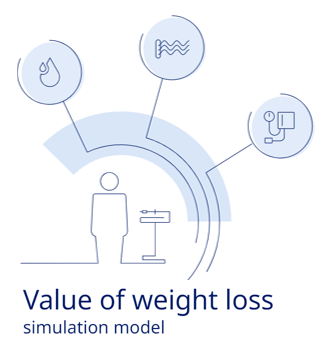

Settings
Population size:
Gender:
BMI range:
25 - 50
Age range:
20 - 69
Time frame:
10 years
Weight change:
-10 %
Costs
Comorbidity
Yearly costs
Sub-population
Sub-population 2022:
Sub-population 2032:
Women / men:
Today
10-year
stable
10-year
change
Results
Comorbidity
Baseline
Stable weight
Weight loss
Reduction in cases
Relative reduction
Savings year 10
Years
Savings
Costs
Comorbidity
Baseline (2022)
Cases
Direct costs
Stable weight scenario (2032)
Cases
Direct costs
Weight loss scenario (2032)
Cases
Direct costs
10-year savings
Cumulative savings